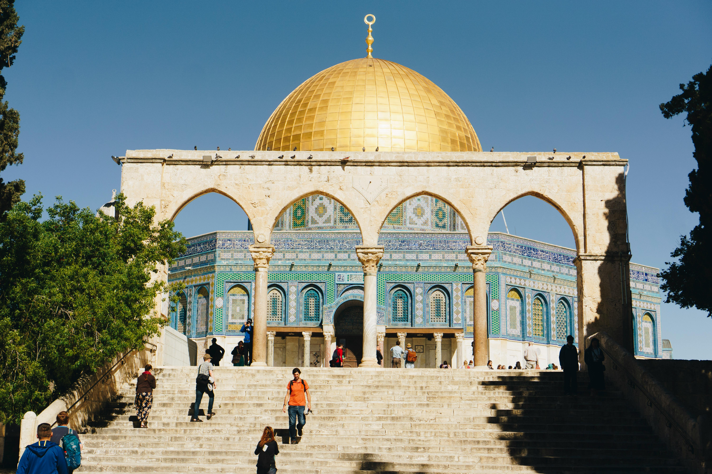

Colosseum (Rome, Italy)The largest ancient amphitheater ever built. It was used for gladiator battles and public shows, holding up to 80,000 people. |
Statue of Liberty (New York, USA)A symbol of freedom and democracy, gifted by France. It stands as a welcoming figure to immigrants arriving by sea. |

|
|
Maiden’s Tower (Istanbul, Turkey)Located on a small islet in the Bosphorus. It's surrounded by legends and now serves as a restaurant and tourist attraction. |
Statue of Zeus at Olympia (Greece)One of the Seven Wonders of the Ancient World, this colossal statue of the god Zeus was crafted by the sculptor Phidias around 435 BC. Standing about 12 meters tall, it was made of ivory and gold and displayed in the Temple of Zeus at Olympia. |

|
|
Pyramids of Giza (Giza, Egypt)The only surviving Wonder of the Ancient World, the Pyramids of Giza were built over 4,500 years ago. The largest, the Great Pyramid of Khufu, was originally 146 meters tall. These monumental tombs reflect the ancient Egyptians' architectural genius and spiritual beliefs. |

|
Cologne Cathedral (Cologne, Germany)A stunning example of Gothic architecture, the Cologne Cathedral is one of the tallest churches in the world. Construction began in 1248 and was completed in 1880, taking over 600 years. It is famous for its twin spires, intricate façade, and stained-glass windows. This UNESCO World Heritage Site remains a significant religious and cultural landmark. |
|
Al-Aqsa Mosque (Jerusalem, Palestine)Al-Aqsa is the third holiest site in Islam, located in the Old City of Jerusalem. It is part of the Noble Sanctuary (Al-Haram Al-Sharif) and holds deep spiritual and historical importance for Muslims. The mosque is known for its silver dome and beautiful Islamic architecture, and it has been a center of worship and scholarship for centuries. |
 |
Taj Mahal (Agra, India)The Taj Mahal is a white marble mausoleum built by Mughal Emperor Shah Jahan in memory of his wife Mumtaz Mahal. It is considered a symbol of eternal love and is one of the most admired masterpieces of Mughal architecture, attracting millions of visitors from around the world. |

|